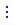
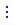

Приложение при создании уже содержит определенный набор компонентов, который зависит от выбранного шаблона. Например, из шаблона “Домашняя страница” в приложение при создании будут добавлены элементы для отображения аналитических данных, а из шаблона “Данные и бизнес-процессы” — страница реестра и страница записи с минимальным набором компонентов. Дальнейшая настройка приложения выполняется в no-code дизайнере.
Все приложения, доступные для редактирования, отображаются в Центре приложений, доступному по клику на  в правом верхнем углу (Рис 1).
в правом верхнем углу (Рис 1).
Здесь же можно создать новое приложение или установить созданное ранее.
При редактировании приложения, созданного в Freedom UI, вы можете изменить общую информацию о нем: название, описание, иконку.
Рассмотрим настройку интерфейса на примере приложения для начисления заработной платы сотрудникам.
В общем случае настройка интерфейса приложения предполагает следующие шаги:
- Создание структуры приложения путем добавления всех необходимых разделов и других элементов. В нашем примере это разделы Начисления, Бонусы, Штрафы.
- Настройка страницы записи. В данной статье этот шаг рассмотрен на примере страницы записи раздела Начисления.
- Настройка страницы реестра. В данной статье этот шаг рассмотрен на примере страницы реестра раздела Начисления.
- Добавление на страницы необходимых элементов :
-
полей и источников данных;
-
бизнес-процессов и кейсов;
-
дашбордов;
-
кнопок, надписей, списков и других компонентов на страницах реестра и страницах записей с учетом требований корпоративного стиля.
-
Для реализации примера нам потребуется приложение "Финансовые компенсации", созданное по шаблону “Данные и бизнес-процессы”. Подробнее: Создать пользовательское приложение.
Шаг 1. Настроить структуру приложения
- Перейдите в Центр приложений по кнопке
 в правом верхнем углу.
в правом верхнем углу. - Откройте приложение “Финансовые компенсации”.
- В блоке Разделы и навигация по кнопке Новый раздел Freedom UI создайте раздел Начисления:
- Выберите иконку раздела/
- В поле Имя укажите название раздела.
- В поле Описание при необходимости добавьте информацию о назначении раздела.
- Нажмите кнопку Создать (Рис. 2).
Рис. 2 — Добавление раздела

- Если необходимо, то добавьте дополнительные страницы , используя для этого имеющиеся шаблоны.
- Повторите шаги 3–5 для всех разделов, которые необходимо добавить в приложение.
Шаг 2. Настроить страницу записи приложения
- Откройте страницу записи приложения “Финансовые компенсации”.
-
Настройте разметку страницы. Интерфейс страницы уже содержит набор компонентов согласно шаблону, в частности остров с гибким контейнером и кнопками, а также два острова слева и остров справа (Рис. 3).
Рис. 3 — Минимальный набор компонентов страницы записиДобавим еще один остров снизу, перетянув его из библиотеки компонентов. Остров должен занимать всю ширину страницы. Внутри островов будут размещены другие элементы, позволяющие структурно и визуально разграничить контент.
- В верхнем левом острове будут содержаться данные профиля сотрудника:
- Добавьте элемент Надпись, например, с заголовком “Данные сотрудника”.
- Разместите в острове следующие поля и настройте их:
- Сотрудник (справочное);
- Должность сотрудника (справочное);
- Департамент (справочное);
- Тип трудового договора (справочное);
- Тип оплаты труда (справочное).
Рис. 4 — Добавление полей в остров
- Аналогичным образом в нижнем левом острове настройте поля для ввода данных о периоде начисления:
-
Период начисления (справочное);
-
Рабочих дней в периоде (числовое);
-
Ответственный (справочное);
-
Компенсация выплачена (логическое).
-
-
В остров снизу добавьте четыре вкладки: Начисления, гросс, Удержания, Бонусы, Штрафы. Переименуйте или удалите вкладки, добавленные по умолчанию. Добавьте на вкладки группы и поля для отображения необходимых данных.
На вкладке Бонусы будут использованы данные из раздела Бонусы приложения “Финансовые компенсации”. Для более удобного добавления записей разместите на вкладке группу “Бонусы за период начисления” и добавьте в шапку кнопку-иконку +, по нажатию которой будет открываться страница создания новой записи указанного объекта (Рис. 5).
Рис. 5 — Настройка вкладок
- В остров справа добавьте дашборды из группы Графики:
-
“Показатель”, который будет отображать тарифную ставку сотрудника.
-
“Показатель”, который будет отображать количество дней отпуска, доступное сотруднику в выбранный период.
-
“Показатель”, который будет отображать количество дней отпуска, использованных сотрудником в выбранный период.
-
“Показатель”, который будет отображать количество дней больничного, доступное сотруднику в выбранный период.
-
“Показатель”, который будет отображать количество дней больничного, использованных сотрудником в выбранный период.
-
“Сплайн”, который будет отображать продуктивность сотрудника в разрезе года по сравнению с данными предыдущего года.
-
- Добавьте в верхний остров кнопку “Пересчитать”, по которой будет выполняться обновление данных в результате запуска предварительно созданного бизнес-процесса (Рис. 6).
Рис. 6 — Добавление дашбордов и кнопки
- Примените изменения по кнопке Сохранить в левом верхнем углу дизайнера.
Шаг 3. Настроить реестр
- В блоке Страницы откройте страницу с реестром, созданную для нужного раздела. Интерфейс уже содержит минимальный набор компонентов (Рис. 8). Каждый из элементов вы можете копировать, редактировать, переместить или удалить.
Рис. 7 — Минимальный набор компонентов страницы реестра
-
Настройте компонент Группы, который позволит сегментировать записи раздела. Например, вы можете сделать сегментацию начислений по периодам: папки “2020”, “2021”, “2022”, каждая из которых содержит вложенные “1-й квартал”, “2-й квартал”, “3-й квартал”, “4-й квартал”. Компонент Меню управления группами позволит скрывать дерево групп.
-
Настройте реестр раздела Финансовые компенсации:
- Закрепите колонку Дата создания по нажатию кнопки  → Закрепить (Рис. 8).
Рис. 8 — Закрепление колонки
- В таком же меню колонки Создал выберите Спрятать чтобы эта информация не отображалась пользователям в реестре.
- Добавьте в реестр колонки ФИО сотрудника, Должность. Для этого нажмите кнопку
 → отметьте нужные поля → нажмите Выбрать (Рис. 9).
Рис. 9 — Выбор колонок
→ отметьте нужные поля → нажмите Выбрать (Рис. 9).
Рис. 9 — Выбор колонок
- Закрепите колонку Дата создания по нажатию кнопки  → Закрепить (Рис. 8).
- Добавьте дашборды “Текущий период начисления” и “Количество рассчитанных начислений в текущем периоде” (Рис. 10).
Рис. 10 — Добавление дашбордов на страницу реестра
- Примените изменения в интерфейсе раздела по нажатию кнопки Сохранить в левом верхнем углу приложения.